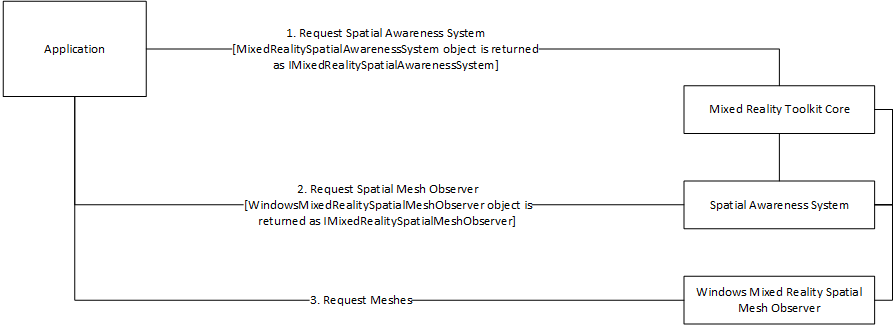

Mixed Reality Toolkit 组件化
Mixed Reality Toolkit v2的一个极大的新特征是改进的组件化。在任何可能的情况下，单独的组件都是与除基础的核心层之外的所有组件隔离的。
最小化依赖 Minimized Dependencies
MRTK v2有意被开发成模块化的，以最小化系统服务之间的依赖关系 (例:空间感知)。
由于某些系统服务的性质(例如:input和teleportation)，存在少量依赖关系。
虽然显而易见的是服务将需要一个或多个data provider组件，但他们之间没有直接链接。对于SDK特性(例如:用户界面组件)也是如此。
组件通信 Component Communication
为了确保组件之间没有直接链接，MRTK v2利用接口在服务、data providers和应用程序代码之间进行通信。这些接口被定义在并且所有通信通过混合现实工具包核心组件路由。

最小化MRTK导入占用空间 Minimizing MRTK import footprint
此时，MRTK作为单个基础包导入(暂时忽略examples包的存在，它是一个完全可选的包)。可以通过手动减少导入的文件来减少这个内存占用，尽管这是一个高度手动的过程，没有定义良好的指南。
在Foundation包的导入过程中，可以取消选中任意项。但是，不建议在开发的早期阶段这样做，因为这样做可能会破坏功能。在确定了应用程序的最终特性集之后，可以在以下文件夹中删除不需要的providers和服务:
- MixedRealityToolkit.Services
- MixedRealityToolkit.Providers
- MixedRealityToolkit.SDK\Features
Note
MRTK v2 需要 Assets\MixedRealityToolkit 文件夹的内容.
即将到来的新特性 Upcoming features
应用程序架构 Application Architecture
MRTK将支持各种架构的应用程序，包括::
在选择应用程序架构时，考虑设计灵活性和应用程序性能非常重要。这里描述的架构并不适用于所有应用程序。
MixedRealityToolkit Service Locator
MRTK启用(并自动配置)应用程序场景，以使用默认MixedRealityToolkitservice locator 组件。该组件支持通过configuration inspectors配置MRTK系统和 data providers，并管理组件生命周期和核心行为(例如:何时更新)。
所有系统都表示在 core configuration inspector中，无论它们是否在项目中出现或启用。请参阅混合现实配置指南获取更多信息。
个人服务组件 Individual Service Components
一些开发人员表示希望将个人服务组件包含到应用程序场景层次结构中。要启用这种用法，服务要么需要封装在自定义注册商中，要么需要进行自注册/自管理。
一个自注册的服务将实现 IMixedRealityServiceRegistrar并注册自己，以便应用程序代码可以通过注册中心发现服务实例。
自管理服务可以在场景层次结构中作为单例对象实现。这个对象将提供和实例化属性，应用程序代码可以使用实例属性直接访问服务功能。
自定义Service Locator Custom Service Locator
一些开发人员要求能够创建自定义service locator组件。自定义service locator将实现IMixedRealityServiceRegistrar接口，并管理活动服务的生命周期和核心行为。
混合架构 Hybrid Architecture
MRTK将支持一种混合的架构，在这种架构中，开发人员可以根据需要或需求组合以前的方法。例如，开发人员可以从MixedRealityToolkitservice locator开始，并添加一个自注册服务。
Note
当选择混合架构时，注意任何工作的重复是很重要的(例如:从多个组件获取控制器数据)。